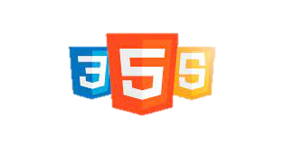

PROGRAMAR DESPUÉS DE LOS 40`s
Buenos días, Buenas tardes, Buenas noches, depende de la hora en que leas este artículo.
Soy Gerardo Arrieta, padre, esposo, hijo y siempre con mil cosas en mi cabeza.
He visto aproximadamente 30 videos de excelentes programadores de diferentes partes del mundo señalando que para programar no hay edad, que el momento es ahora, que lo intentes, que no te rindas, que puedes hacerlo, que solo debes dedicarle 12 horas al día, que debes enfocarte, sin embargo, la gran mayoría sino el 100% tienen algo en común, ninguno comenzó luego de sus 40 años.
He aquí donde les cuento la historia de una persona que si comenzó luego de sus 40 años, específicamente a los 42 años, 10 meses -2 días, un 28 de marzo del 2020, si ese soy yo.
La pandemia y la situación en mi país me hicieron pensar en otras alternativas para continuar, soy Licenciado en Contaduría Pública con más de 10 de experiencia en el área.
Hace 20 años más o menos uno de mis trabajos fue el de reparar computadoras y de una u otra manera siempre he estado relacionado con estos equipos, también he trabajado con algunos software como por ejemplo Microsoft Office y algunos programas administrativos relacionados con mi profesión.
Un familiar cercano es Ingeniero de Software y desde hace mucho tiempo me decía que lo intentara que yo podía aprender, pero el pequeño demonio en mi hombro derecho me decía YA ESTAS MUY VIEJO PARA ESO, y no me creía capaz de hacerlo, dudaba de mí mismo, en ese entonces veía una serie llamada Silicon Valley y en un capítulo al protagonista le dijeron que como era posible que programara tan viejo, y el tipo tenía 25 años.🤣🤣🤣🤣🤣
Ese 28 de Marzo que les comente decidí comenzar a estudiar nuevamente, decidí trazarme una ruta y dedicarle el mayor tiempo posible a prepararme en el mundo de la programación.
Comencé con HTML, no sabía absolutamente nada, ¿Qué era una etiqueta? Un h1, un "p", un "a", era un idioma totalmente distinto para mí, cada día era lucha constante conmigo mismo, un HEAD no sabía que todo eso se usaba en HTML, HEAD lo relacionaba solamente con cabeza en español y así continúe día tras día, entre FreeCodeCamp, los tutoriales de excelentes canales de YOUTUBE como el de Dorian Desings, @soydalto y JonMircha fui dominando poco esa nueva herramienta para mí (Por cierto HTML significa HyperText Markup Language) , luego de sentirme bastante cómodo con los desafíos que conseguía sobre todo en FreeCodeCamp me di cuenta que ya estaba listo para comenzar…..Si muy listo para comenzar... comenzar pero a estudiar nuevamente, a comenzar de cero pero ahora con CSS (Cascading Style Sheets) ya que uno sin el otro es nada de nada pero de nada nadita.
Con HTML hacemos la estructura de la casa, pero con CSS ponemos las paredes, techos, pinturas etc… comencé nuevamente de lleno con CSS, desafío tras desafío, y fui dándole estilo a lo que había realizado anteriormente con CSS, hice hasta un sitio web personal y otros desafíos que ya se veían atractivos, y allí fue cuando me di cuenta que ya estaba listo, ya estaba mega listo, recontra listo pero a seguir estudiando porque le tocaba el turno a nuestro amigo JavaScript.
Si con HTML hacemos la estructura de la casa y con CSS le colocamos paredes y pintura a nuestra casa, con Javascript le damos funcionalidad, al presionar un interruptor se enciende el bombillo (foco) o al girar una llave sale agua del grifo.

Ésta es la ruta que he seguido desde que comencé hace más de 1 año en este maravilloso mundo de la programación, ahora bien porque cuento mi historia luego de un año, sencillamente porque quise hacerlo……. No, no mentira, se las cuento porque ya hice mi primer proyecto donde me pagaron por ese servicio y ya lo tengo casi listo.
Para terminar quiero hacerlo como dicen muchas personas en sus videos llamados ¿Cuál es la edad para comenzar a programar?
El momento es ahora, que tu edad no sea impedimento.
Recuerda seguirme en este nuevo proyecto y compartir esta historia si te gusto o si te sientes identificado con mi caso.
Soy Gerardo Arrieta, Desarrollador Web FrontEnd y Contador Público, hasta pronto….